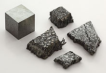

Lutetium
|  | |||||||||||||||||||||||||||||||||||||||||||||||||||||||||||||||||||||||||||||||||||||||||||||||||||||||||||||||||||||||||||||||||||||||||||||||||||||||||||||||||||||||||||||||||||||||||||||||||||||||||||||||||||||||||||||||||||||
| General properties | |||||||||||||||||||||||||||||||||||||||||||||||||||||||||||||||||||||||||||||||||||||||||||||||||||||||||||||||||||||||||||||||||||||||||||||||||||||||||||||||||||||||||||||||||||||||||||||||||||||||||||||||||||||||||||||||||||||
|---|---|---|---|---|---|---|---|---|---|---|---|---|---|---|---|---|---|---|---|---|---|---|---|---|---|---|---|---|---|---|---|---|---|---|---|---|---|---|---|---|---|---|---|---|---|---|---|---|---|---|---|---|---|---|---|---|---|---|---|---|---|---|---|---|---|---|---|---|---|---|---|---|---|---|---|---|---|---|---|---|---|---|---|---|---|---|---|---|---|---|---|---|---|---|---|---|---|---|---|---|---|---|---|---|---|---|---|---|---|---|---|---|---|---|---|---|---|---|---|---|---|---|---|---|---|---|---|---|---|---|---|---|---|---|---|---|---|---|---|---|---|---|---|---|---|---|---|---|---|---|---|---|---|---|---|---|---|---|---|---|---|---|---|---|---|---|---|---|---|---|---|---|---|---|---|---|---|---|---|---|---|---|---|---|---|---|---|---|---|---|---|---|---|---|---|---|---|---|---|---|---|---|---|---|---|---|---|---|---|---|---|---|---|---|---|---|---|---|---|---|---|---|---|---|---|---|---|---|---|
| Name, symbol | lutetium, Lu | ||||||||||||||||||||||||||||||||||||||||||||||||||||||||||||||||||||||||||||||||||||||||||||||||||||||||||||||||||||||||||||||||||||||||||||||||||||||||||||||||||||||||||||||||||||||||||||||||||||||||||||||||||||||||||||||||||||
| Pronunciation | /ljuːˈtiːʃiəm/ lew-TEE-shee-əm |
||||||||||||||||||||||||||||||||||||||||||||||||||||||||||||||||||||||||||||||||||||||||||||||||||||||||||||||||||||||||||||||||||||||||||||||||||||||||||||||||||||||||||||||||||||||||||||||||||||||||||||||||||||||||||||||||||||
| Appearance | silvery white | ||||||||||||||||||||||||||||||||||||||||||||||||||||||||||||||||||||||||||||||||||||||||||||||||||||||||||||||||||||||||||||||||||||||||||||||||||||||||||||||||||||||||||||||||||||||||||||||||||||||||||||||||||||||||||||||||||||
| Lutetium in the periodic table | |||||||||||||||||||||||||||||||||||||||||||||||||||||||||||||||||||||||||||||||||||||||||||||||||||||||||||||||||||||||||||||||||||||||||||||||||||||||||||||||||||||||||||||||||||||||||||||||||||||||||||||||||||||||||||||||||||||
|
|||||||||||||||||||||||||||||||||||||||||||||||||||||||||||||||||||||||||||||||||||||||||||||||||||||||||||||||||||||||||||||||||||||||||||||||||||||||||||||||||||||||||||||||||||||||||||||||||||||||||||||||||||||||||||||||||||||
| Atomic number | 71 | ||||||||||||||||||||||||||||||||||||||||||||||||||||||||||||||||||||||||||||||||||||||||||||||||||||||||||||||||||||||||||||||||||||||||||||||||||||||||||||||||||||||||||||||||||||||||||||||||||||||||||||||||||||||||||||||||||||
| Standard atomic weight (±) | 174.9668(1)[1] | ||||||||||||||||||||||||||||||||||||||||||||||||||||||||||||||||||||||||||||||||||||||||||||||||||||||||||||||||||||||||||||||||||||||||||||||||||||||||||||||||||||||||||||||||||||||||||||||||||||||||||||||||||||||||||||||||||||
| Element category | lanthanide, sometimes considered a transition metal | ||||||||||||||||||||||||||||||||||||||||||||||||||||||||||||||||||||||||||||||||||||||||||||||||||||||||||||||||||||||||||||||||||||||||||||||||||||||||||||||||||||||||||||||||||||||||||||||||||||||||||||||||||||||||||||||||||||
| Group, block | group n/a, d-block | ||||||||||||||||||||||||||||||||||||||||||||||||||||||||||||||||||||||||||||||||||||||||||||||||||||||||||||||||||||||||||||||||||||||||||||||||||||||||||||||||||||||||||||||||||||||||||||||||||||||||||||||||||||||||||||||||||||
| Period | period 6 | ||||||||||||||||||||||||||||||||||||||||||||||||||||||||||||||||||||||||||||||||||||||||||||||||||||||||||||||||||||||||||||||||||||||||||||||||||||||||||||||||||||||||||||||||||||||||||||||||||||||||||||||||||||||||||||||||||||
| Electron configuration | [Xe] 6s2 4f14 5d1 | ||||||||||||||||||||||||||||||||||||||||||||||||||||||||||||||||||||||||||||||||||||||||||||||||||||||||||||||||||||||||||||||||||||||||||||||||||||||||||||||||||||||||||||||||||||||||||||||||||||||||||||||||||||||||||||||||||||
| per shell | 2, 8, 18, 32, 9, 2 | ||||||||||||||||||||||||||||||||||||||||||||||||||||||||||||||||||||||||||||||||||||||||||||||||||||||||||||||||||||||||||||||||||||||||||||||||||||||||||||||||||||||||||||||||||||||||||||||||||||||||||||||||||||||||||||||||||||
| Physical properties | |||||||||||||||||||||||||||||||||||||||||||||||||||||||||||||||||||||||||||||||||||||||||||||||||||||||||||||||||||||||||||||||||||||||||||||||||||||||||||||||||||||||||||||||||||||||||||||||||||||||||||||||||||||||||||||||||||||
| Phase | solid | ||||||||||||||||||||||||||||||||||||||||||||||||||||||||||||||||||||||||||||||||||||||||||||||||||||||||||||||||||||||||||||||||||||||||||||||||||||||||||||||||||||||||||||||||||||||||||||||||||||||||||||||||||||||||||||||||||||
| Melting point | 1925 K (1652 °C, 3006 °F) | ||||||||||||||||||||||||||||||||||||||||||||||||||||||||||||||||||||||||||||||||||||||||||||||||||||||||||||||||||||||||||||||||||||||||||||||||||||||||||||||||||||||||||||||||||||||||||||||||||||||||||||||||||||||||||||||||||||
| Boiling point | 3675 K (3402 °C, 6156 °F) | ||||||||||||||||||||||||||||||||||||||||||||||||||||||||||||||||||||||||||||||||||||||||||||||||||||||||||||||||||||||||||||||||||||||||||||||||||||||||||||||||||||||||||||||||||||||||||||||||||||||||||||||||||||||||||||||||||||
| Density near r.t. | 9.841 g·cm−3 | ||||||||||||||||||||||||||||||||||||||||||||||||||||||||||||||||||||||||||||||||||||||||||||||||||||||||||||||||||||||||||||||||||||||||||||||||||||||||||||||||||||||||||||||||||||||||||||||||||||||||||||||||||||||||||||||||||||
| when liquid, at m.p. | 9.3 g·cm−3 | ||||||||||||||||||||||||||||||||||||||||||||||||||||||||||||||||||||||||||||||||||||||||||||||||||||||||||||||||||||||||||||||||||||||||||||||||||||||||||||||||||||||||||||||||||||||||||||||||||||||||||||||||||||||||||||||||||||
| Heat of fusion | ca. 22 kJ·mol−1 | ||||||||||||||||||||||||||||||||||||||||||||||||||||||||||||||||||||||||||||||||||||||||||||||||||||||||||||||||||||||||||||||||||||||||||||||||||||||||||||||||||||||||||||||||||||||||||||||||||||||||||||||||||||||||||||||||||||
| Heat of vaporization | 414 kJ·mol−1 | ||||||||||||||||||||||||||||||||||||||||||||||||||||||||||||||||||||||||||||||||||||||||||||||||||||||||||||||||||||||||||||||||||||||||||||||||||||||||||||||||||||||||||||||||||||||||||||||||||||||||||||||||||||||||||||||||||||
| Molar heat capacity | 26.86 J·mol−1·K−1 | ||||||||||||||||||||||||||||||||||||||||||||||||||||||||||||||||||||||||||||||||||||||||||||||||||||||||||||||||||||||||||||||||||||||||||||||||||||||||||||||||||||||||||||||||||||||||||||||||||||||||||||||||||||||||||||||||||||
vapor pressure
|
|||||||||||||||||||||||||||||||||||||||||||||||||||||||||||||||||||||||||||||||||||||||||||||||||||||||||||||||||||||||||||||||||||||||||||||||||||||||||||||||||||||||||||||||||||||||||||||||||||||||||||||||||||||||||||||||||||||
| Atomic properties | |||||||||||||||||||||||||||||||||||||||||||||||||||||||||||||||||||||||||||||||||||||||||||||||||||||||||||||||||||||||||||||||||||||||||||||||||||||||||||||||||||||||||||||||||||||||||||||||||||||||||||||||||||||||||||||||||||||
| Oxidation states | 3, 2, 1 (a weakly basic oxide) | ||||||||||||||||||||||||||||||||||||||||||||||||||||||||||||||||||||||||||||||||||||||||||||||||||||||||||||||||||||||||||||||||||||||||||||||||||||||||||||||||||||||||||||||||||||||||||||||||||||||||||||||||||||||||||||||||||||
| Electronegativity | Pauling scale: 1.27 | ||||||||||||||||||||||||||||||||||||||||||||||||||||||||||||||||||||||||||||||||||||||||||||||||||||||||||||||||||||||||||||||||||||||||||||||||||||||||||||||||||||||||||||||||||||||||||||||||||||||||||||||||||||||||||||||||||||
| Ionization energies | 1st: 523.5 kJ·mol−1 2nd: 1340 kJ·mol−1 3rd: 2022.3 kJ·mol−1 |
||||||||||||||||||||||||||||||||||||||||||||||||||||||||||||||||||||||||||||||||||||||||||||||||||||||||||||||||||||||||||||||||||||||||||||||||||||||||||||||||||||||||||||||||||||||||||||||||||||||||||||||||||||||||||||||||||||
| Atomic radius | empirical: 174 pm | ||||||||||||||||||||||||||||||||||||||||||||||||||||||||||||||||||||||||||||||||||||||||||||||||||||||||||||||||||||||||||||||||||||||||||||||||||||||||||||||||||||||||||||||||||||||||||||||||||||||||||||||||||||||||||||||||||||
| Covalent radius | 187±8 pm | ||||||||||||||||||||||||||||||||||||||||||||||||||||||||||||||||||||||||||||||||||||||||||||||||||||||||||||||||||||||||||||||||||||||||||||||||||||||||||||||||||||||||||||||||||||||||||||||||||||||||||||||||||||||||||||||||||||
| Miscellanea | |||||||||||||||||||||||||||||||||||||||||||||||||||||||||||||||||||||||||||||||||||||||||||||||||||||||||||||||||||||||||||||||||||||||||||||||||||||||||||||||||||||||||||||||||||||||||||||||||||||||||||||||||||||||||||||||||||||
| Crystal structure | hexagonal close-packed (hcp)
|
||||||||||||||||||||||||||||||||||||||||||||||||||||||||||||||||||||||||||||||||||||||||||||||||||||||||||||||||||||||||||||||||||||||||||||||||||||||||||||||||||||||||||||||||||||||||||||||||||||||||||||||||||||||||||||||||||||
| Thermal expansion | poly: 9.9 µm·m−1·K−1 (at r.t.) | ||||||||||||||||||||||||||||||||||||||||||||||||||||||||||||||||||||||||||||||||||||||||||||||||||||||||||||||||||||||||||||||||||||||||||||||||||||||||||||||||||||||||||||||||||||||||||||||||||||||||||||||||||||||||||||||||||||
| Thermal conductivity | 16.4 W·m−1·K−1 | ||||||||||||||||||||||||||||||||||||||||||||||||||||||||||||||||||||||||||||||||||||||||||||||||||||||||||||||||||||||||||||||||||||||||||||||||||||||||||||||||||||||||||||||||||||||||||||||||||||||||||||||||||||||||||||||||||||
| Electrical resistivity | poly: 582 nΩ·m (at r.t.) | ||||||||||||||||||||||||||||||||||||||||||||||||||||||||||||||||||||||||||||||||||||||||||||||||||||||||||||||||||||||||||||||||||||||||||||||||||||||||||||||||||||||||||||||||||||||||||||||||||||||||||||||||||||||||||||||||||||
| Magnetic ordering | paramagnetic[2] | ||||||||||||||||||||||||||||||||||||||||||||||||||||||||||||||||||||||||||||||||||||||||||||||||||||||||||||||||||||||||||||||||||||||||||||||||||||||||||||||||||||||||||||||||||||||||||||||||||||||||||||||||||||||||||||||||||||
| Young's modulus | 68.6 GPa | ||||||||||||||||||||||||||||||||||||||||||||||||||||||||||||||||||||||||||||||||||||||||||||||||||||||||||||||||||||||||||||||||||||||||||||||||||||||||||||||||||||||||||||||||||||||||||||||||||||||||||||||||||||||||||||||||||||
| Shear modulus | 27.2 GPa | ||||||||||||||||||||||||||||||||||||||||||||||||||||||||||||||||||||||||||||||||||||||||||||||||||||||||||||||||||||||||||||||||||||||||||||||||||||||||||||||||||||||||||||||||||||||||||||||||||||||||||||||||||||||||||||||||||||
| Bulk modulus | 47.6 GPa | ||||||||||||||||||||||||||||||||||||||||||||||||||||||||||||||||||||||||||||||||||||||||||||||||||||||||||||||||||||||||||||||||||||||||||||||||||||||||||||||||||||||||||||||||||||||||||||||||||||||||||||||||||||||||||||||||||||
| Poisson ratio | 0.261 | ||||||||||||||||||||||||||||||||||||||||||||||||||||||||||||||||||||||||||||||||||||||||||||||||||||||||||||||||||||||||||||||||||||||||||||||||||||||||||||||||||||||||||||||||||||||||||||||||||||||||||||||||||||||||||||||||||||
| Vickers hardness | 755–1160 MPa | ||||||||||||||||||||||||||||||||||||||||||||||||||||||||||||||||||||||||||||||||||||||||||||||||||||||||||||||||||||||||||||||||||||||||||||||||||||||||||||||||||||||||||||||||||||||||||||||||||||||||||||||||||||||||||||||||||||
| Brinell hardness | 890–1300 MPa | ||||||||||||||||||||||||||||||||||||||||||||||||||||||||||||||||||||||||||||||||||||||||||||||||||||||||||||||||||||||||||||||||||||||||||||||||||||||||||||||||||||||||||||||||||||||||||||||||||||||||||||||||||||||||||||||||||||
| CAS Registry Number | 7439-94-3 | ||||||||||||||||||||||||||||||||||||||||||||||||||||||||||||||||||||||||||||||||||||||||||||||||||||||||||||||||||||||||||||||||||||||||||||||||||||||||||||||||||||||||||||||||||||||||||||||||||||||||||||||||||||||||||||||||||||
| History | |||||||||||||||||||||||||||||||||||||||||||||||||||||||||||||||||||||||||||||||||||||||||||||||||||||||||||||||||||||||||||||||||||||||||||||||||||||||||||||||||||||||||||||||||||||||||||||||||||||||||||||||||||||||||||||||||||||
| Naming | after Lutetia, Latin for: Paris, in the Roman era | ||||||||||||||||||||||||||||||||||||||||||||||||||||||||||||||||||||||||||||||||||||||||||||||||||||||||||||||||||||||||||||||||||||||||||||||||||||||||||||||||||||||||||||||||||||||||||||||||||||||||||||||||||||||||||||||||||||
| Discovery | Georges Urbain and Carl Auer von Welsbach (1906) | ||||||||||||||||||||||||||||||||||||||||||||||||||||||||||||||||||||||||||||||||||||||||||||||||||||||||||||||||||||||||||||||||||||||||||||||||||||||||||||||||||||||||||||||||||||||||||||||||||||||||||||||||||||||||||||||||||||
| First isolation | Carl Auer von Welsbach (1906) | ||||||||||||||||||||||||||||||||||||||||||||||||||||||||||||||||||||||||||||||||||||||||||||||||||||||||||||||||||||||||||||||||||||||||||||||||||||||||||||||||||||||||||||||||||||||||||||||||||||||||||||||||||||||||||||||||||||
| Most stable isotopes | |||||||||||||||||||||||||||||||||||||||||||||||||||||||||||||||||||||||||||||||||||||||||||||||||||||||||||||||||||||||||||||||||||||||||||||||||||||||||||||||||||||||||||||||||||||||||||||||||||||||||||||||||||||||||||||||||||||
|
|||||||||||||||||||||||||||||||||||||||||||||||||||||||||||||||||||||||||||||||||||||||||||||||||||||||||||||||||||||||||||||||||||||||||||||||||||||||||||||||||||||||||||||||||||||||||||||||||||||||||||||||||||||||||||||||||||||
| Decay modes in parentheses are predicted, but have not yet been observed | |||||||||||||||||||||||||||||||||||||||||||||||||||||||||||||||||||||||||||||||||||||||||||||||||||||||||||||||||||||||||||||||||||||||||||||||||||||||||||||||||||||||||||||||||||||||||||||||||||||||||||||||||||||||||||||||||||||
{kind=link}
Lutetium is a chemical element with symbol Lu and atomic number 71. It is a silvery white metal, which resists corrosion in dry, but not in moist air. It is considered the first element of the 6th-period transition metals (or, on occasion, the last element in the lanthanide series), and traditionally counted among the rare earths.
Lutetium was independently discovered in 1907 by French scientist Georges Urbain, Austrian mineralogist Baron Carl Auer von Welsbach, and American chemist Charles James. All of these men found lutetium as an impurity in the mineral ytterbia, which was previously thought to consist entirely of ytterbium. The dispute on the priority of the discovery occurred shortly after, with Urbain and Welsbach accusing each other of publishing results influenced by the published research of the other; the naming honor went to Urbain, as he had published his results earlier. He chose the name lutecium for the new element, but in 1949 the spelling of element 71 was changed to lutetium. In 1909, the priority was finally granted to Urbain and his names were adopted as official ones; however, the name cassiopeium (or later cassiopium) for element 71 proposed by Welsbach was used by many German scientists until the 1950s. Lutetium has the highest Brinell hardness of any lanthanide, at 890–1300 MPa MPa.[3]
Lutetium is not a particularly abundant element, though significantly more common than silver in the earth's crust; it has few specific uses. Lutetium-176 is a relatively abundant (2.5%) radioactive isotope with a half-life of about 38 billion years, and so used to determine the age of meteorites. Lutetium usually occurs in association with the element yttrium and is sometimes used in metal alloys and as a catalyst in various chemical reactions. 177Lu-DOTA-TATE is used for radionuclide therapy (see Nuclear medicine) on neuroendocrine tumours.
Contents
[hide]Characteristics[edit]
Physical properties[edit]
A lutetium atom has 71 electrons, arranged in the configuration [Xe] 4f145d16s2.[4] When entering a chemical reaction, the atom loses its two outermost electrons and the single 5d-electron; this is unusual since reactions of the other lanthanides invariably involve f-shell electrons. The lutetium atom is the smallest among the lanthanide atoms, due to the lanthanide contraction,[5] and as a result lutetium has the highest density, melting point, and hardness of the lanthanides.[6] Some of these properties can be explained by its position in the d-block, which gives the metal properties of some heavier transition metals. Occasionally, lutetium is classified as a transition metal on this basis, although the IUPAC classifies it as a lanthanide.
Chemical properties and compounds[edit]
Lutetium's compounds always contain the element in the oxidation state +3. Aqueous solutions of most lutetium salts are colorless and form white crystalline solids upon drying, with the common exception of the iodide. The soluble salts, such as nitrate, sulfate and acetate form hydrates upon crystallization. The oxide, hydroxide, fluoride, carbonate, phosphate and oxalate are insoluble in water.[7]
Lutetium metal is slightly unstable in air at standard conditions, but it burns readily at 150 °C to form lutetium oxide. The resulting compound is known to absorb water and carbon dioxide, and may be used to remove vapors of these compounds from closed atmospheres.[8] Similar observations are made during reaction between lutetium and water (slow when cold and fast when hot); lutetium hydroxide is formed in the reaction.[9] Lutetium metal is known to react with the four lightest halogens to form trihalides; all of them (except the fluoride) are soluble in water.
Lutetium dissolves readily in weak acids[8] and dilute sulfuric acid to form solutions containing the colorless lutetium ions, which are coordinated by between seven and nine water molecules, the average being [Lu(H2O)8.2]3+.[10]
- 2 Lu + 3 H2SO4 → 2 Lu3+ + 3 SO2–
4 + 3 H2↑
Isotopes[edit]
Lutetium occurs on the Earth in form of two isotopes: lutetium-175 and lutetium-176. Out of these two, only the former is stable, making the element monoisotopic. The latter one, lutetium-176, decays via beta decay with a half-life of 3.78×1010 years; it makes up about 2.5% of natural lutetium.[11] To date, 32 synthetic radioisotopes of the element have been characterized, ranging in mass from 149.973 (lutetium-150) to 183.961 (lutetium-184); the most stable such isotopes are lutetium-174 with a half-life of 3.31 years, and lutetium-173 with a half-life of 1.37 years.[11] All of the remaining radioactive isotopes have half-lives that are less than 9 days, and the majority of these have half-lives that are less than half an hour.[11] Isotopes lighter than the stable lutetium-175 decay via electron capture (to produce isotopes of ytterbium), with some alpha and positron emission; the heavier isotopes decay primarily via beta decay, producing hafnium isotopes.[11]
The element also has 42 nuclear isomers, with masses of 150, 151, 153—162, 166—180 (not every mass number corresponds to only one isomer). The most stable of them are lutetium-177m, with half-life of 160.4 days and lutetium-174m, with half-life of 142 days; this is longer than half-lives of the ground states of all radioactive lutetium isotopes, except only for lutetium-173, 174, and 176.[11]
History[edit]
Lutetium, derived from the Latin Lutetia (Paris), was independently discovered in 1907 by French scientist Georges Urbain, Austrian mineralogist Baron Carl Auer von Welsbach, and American chemist Charles James.[12][13] They found it as an impurity in ytterbia, which was thought by Swiss chemist Jean Charles Galissard de Marignac to consist entirely of ytterbium.[14] The scientists proposed different names for the elements: Urbain chose neoytterbium and lutecium,[15] whereas Welsbach chose aldebaranium and cassiopeium.[16] Both of these articles accused the other man of publishing results based on those of the author.
The International Commission on Atomic Weights, which was then responsible for the attribution of new element names, settled the dispute in 1909 by granting priority to Urbain and adopting his names as official ones, based on the fact that the separation of lutetium from Marignac's ytterbium was first described by Urbain;[14] after Urbain's names were recognized, neoytterbium was reverted to ytterbium. Until the 1950s, some German-speaking chemists called lutetium by Welsbach's name, cassiopeium; in 1949, the spelling of element 71 was changed to lutetium. However, Welsbach's 1907 samples of lutetium had been pure, while Urbain's 1907 samples only contained traces of lutetium.[17] This later misled Urbain into thinking that he had discovered element 72, which he named celtium, which was actually very pure lutetium.[17] Charles James, who stayed out of the priority argument, worked on a much larger scale and possessed the largest supply of lutetium at the time.[18] Pure lutetium metal was first produced in 1953.[18]
Occurrence and production[edit]
{kind=link}
Found with almost all other rare-earth metals but never by itself, lutetium is very difficult to separate from other elements. The principal commercially viable ore of lutetium is the rare earth phosphate mineral monazite: (Ce,La,etc.)PO4 which contains 0.0001% of the element.[8] The abundance of lutetium in the Earth crust is only about 0.5 mg/kg. The main mining areas are China, United States, Brazil, India, Sri Lanka and Australia. The world production of lutetium (in the form of oxide) is about 10 tonnes per year.[18] Pure lutetium metal is very difficult to prepare. It is one of the rarest and most expensive of the rare earth metals with the price about US$10,000 per kilogram, or about one-fourth that of gold.[19][20]
Crushed minerals are treated with hot concentrated sulfuric acid to produce water-soluble sulfates of rare earths. Thorium precipitates out of solution as hydroxide and is removed. After that the solution is treated with ammonium oxalate to convert rare earths into their insoluble oxalates. The oxalates are converted to oxides by annealing. The oxides are dissolved in nitric acid that excludes one of the main components, cerium, whose oxide is insoluble in HNO3. Several rare earth metals, including lutetium, are separated as a double salt with ammonium nitrate by crystallization. Lutetium is separated by ion exchange. In this process, rare-earth ions are sorbed onto suitable ion-exchange resin by exchange with hydrogen, ammonium or cupric ions present in the resin. Lutetium salts are then selectively washed out by suitable complexing agent. Lutetium metal is then obtained by reduction of anhydrous LuCl3 or LuF3 by either an alkali metal or alkaline earth metal.[7]
- 2 LuCl3 + 3 Ca → 2 Lu + 3 CaCl2
Applications[edit]
Because of the rarity and high price, lutetium has very few commercial uses. However, stable lutetium can be used as catalysts in petroleum cracking in refineries and can also be used in alkylation, hydrogenation, and polymerization applications.
Lutetium aluminium garnet (Al5Lu3O12) has been proposed for use as a lens material in high refractive index immersion lithography.[21] Additionally, a tiny amount of lutetium is added as a dopant to gadolinium gallium garnet (GGG), which is used in magnetic bubble memory devices.[22] Cerium-doped lutetium oxyorthosilicate (LSO) is currently the preferred compound for detectors in positron emission tomography (PET).[23][24] Lutetium is used as a phosphor in LED light bulbs.[25]
Aside from stable lutetium, its radioactive isotopes have several specific uses. The suitable half-life and decay mode made lutetium-176 used as a pure beta emitter, using lutetium which has been exposed to neutron activation, and in lutetium–hafnium dating to date meteorites.[26] The synthetic isotope lutetium-177 bound to octreotate (a somatostatin analogue), is used experimentally in targeted radionuclide therapy for neuroendocrine tumors.[27] Indeed, lutetium-177 is seeing increasing use as a radionuclide, in neuroendrocine tumor therapy and bone pain palliation.[28][29]
Lutetium tantalate (LuTaO4) is the densest known stable white material (density 9.81 g/cm3)[30] and therefore is an ideal host for X-ray phosphors.[31][32] The only denser white material is thorium dioxide, with density of 10 g/cm3, but the thorium it contains is radioactive.
Precautions[edit]
Like other rare-earth metals, lutetium is regarded as having a low degree of toxicity, but its compounds should be handled with care nonetheless: for example, lutetium fluoride inhalation is dangerous and the compound irritates skin.[8] Lutetium nitrate may be dangerous as it may explode and burn once heated. Lutetium oxide powder is toxic as well if inhaled or ingested.[8]
Similarly to other group 3 elements and lanthanides, lutetium has no known biological role, but it is found even in humans, concentrating in bones, and to a lesser extent in the liver and kidneys.[18] Lutetium salts are known to occur together with other lanthanide salts in nature; the element is the least abundant in the human body of all lanthanides.[18] Human diets have not been monitored for lutetium content, so it is not known how much the average human takes in, but estimations show the amount is only about several micrograms per year, all coming from tiny amounts taken by plants. Soluble lutetium salts are mildly toxic, but insoluble ones are not.[18]
See also[edit]
References[edit]
- Jump up ^ Standard Atomic Weights 2013. Commission on Isotopic Abundances and Atomic Weights
- Jump up ^ Lide, D. R., ed. (2005). "Magnetic susceptibility of the elements and inorganic compounds". CRC Handbook of Chemistry and Physics (PDF) (86th ed.). Boca Raton (FL): CRC Press. ISBN 0-8493-0486-5.
- Jump up ^ Samsonov, G. V., ed. (1968). "Mechanical Properties of the Elements". Handbook of the physicochemical properties of the elements. New York, USA: IFI-Plenum. doi:10.1007/978-1-4684-6066-7_7. ISBN 978-1-4684-6066-7.
- Jump up ^ Greenwood, Norman N.; Earnshaw, Alan (1997). Chemistry of the Elements (2nd ed.). Butterworth-Heinemann. p. 1223. ISBN 0080379419.
- Jump up ^ Cotton, F. Albert; Wilkinson, Geoffrey (1988), Advanced Inorganic Chemistry (5th ed.), New York: Wiley-Interscience, pp. 776, 955, ISBN 0-471-84997-9
- Jump up ^ Parker, Sybil P. (1984). Dictionary of Scientific and Technical Terms (3rd ed.). New York: McGraw-Hill.
- ^ Jump up to: a b Patnaik, Pradyot (2003). Handbook of Inorganic Chemical Compounds. McGraw-Hill. p. 510. ISBN 0-07-049439-8. Retrieved 2009-06-06.
- ^ Jump up to: a b c d e Krebs, Robert E. (2006). The history and use of our earth's chemical elements: a reference guide. Greenwood Publishing Group. pp. 303–304. ISBN 0-313-33438-2.
- Jump up ^ "Chemical reactions of Lutetium". Webelements. Retrieved 2009-06-06.
- Jump up ^ Persson, Ingmar (2010). "Hydrated metal ions in aqueous solution: How regular are their structures?". Pure and Applied Chemistry 82 (10): 1901–1917. doi:10.1351/PAC-CON-09-10-22. ISSN 0033-4545.
- ^ Jump up to: a b c d e Georges, Audi; Bersillon, O.; Blachot, J.; Wapstra, A.H. (2003). "The NUBASE Evaluation of Nuclear and Decay Properties". Nuclear Physics A (Atomic Mass Data Center) 729: 3–128. Bibcode:2003NuPhA.729....3A. doi:10.1016/j.nuclphysa.2003.11.001.
- Jump up ^ James, C. (1907). "A new method for the separation of the yttrium earths". Journal of the American Chemical Society 29: 495–499. In a footnote on page 498, James mentions that Carl Auer von Welsbach had announced " … the presence of a new element Er, γ, which is undoubtedly the same as here noted, … ." The article to which James refers is: C. Auer von Welsbach (1907) "Über die Elemente der Yttergruppe, (I. Teil)" (On the elements of the ytterbium group (1st part)), Monatshefte für Chemie und verwandte Teile anderer Wissenschaften (Monthly Journal for Chemistry and Related Fields of Other Sciences), 27 : 935-946.
- Jump up ^ "Separation of Rare Earth Elements by Charles James". National Historic Chemical Landmarks. American Chemical Society. Retrieved 2014-02-21.
- ^ Jump up to: a b Urbain, G. (1907). "Un nouvel élément: le lutécium, résultant du dédoublement de l'ytterbium de Marignac". Comptes rendus … 145: 759–762.
- Jump up ^ Urbain, G. (1909). "Lutetium und Neoytterbium oder Cassiopeium und Aldebaranium -- Erwiderung auf den Artikel des Herrn Auer v. Welsbach.". Monatshefte für Chemie 31 (10): 1. doi:10.1007/BF01530262.
- Jump up ^ Welsbach, Carl A. von (1908). "Die Zerlegung des Ytterbiums in seine Elemente" [Resolution of ytterbium into its elements]. Monatshefte für Chemie 29 (2): 181–225, 191. doi:10.1007/BF01558944. On page 191, Welsbach suggested names for the two new elements: "Ich beantrage für das an das Thulium, beziehungsweise Erbium sich anschließende, in dem vorstehenden Teile dieser Abhandlung mit Yb II bezeichnete Element die Benennung: Aldebaranium mit dem Zeichen Ad — und für das zweite, in dieser Arbeit mit Yb I bezeichnete Element, das letzte in der Reihe der seltenen Erden, die Benennung: Cassiopeïum mit dem Zeichen Cp." (I request for the element that is attached to thulium or erbium and that was denoted by Yb II in the above part of this paper, the designation "Aldebaranium" with the symbol Ad — and for the element that was denoted in this work by Yb I, the last in the series of the rare earths, the designation "Cassiopeïum" with the symbol Cp.)
- ^ Jump up to: a b Thyssen, Pieter; Binnemans, Koen (2011). "Accommodation of the Rare Earths in the Periodic Table: A Historical Analysis". In Gschneider, Karl A., Jr.; Bünzli, Jean-Claude; Pecharsky, Vitalij K. Handbook on the Physics and Chemistry of Rare Earths. Amsterdam: Elsevier. p. 63. ISBN 978-0-444-53590-0. OCLC 690920513. Retrieved 2013-04-25.
- ^ Jump up to: a b c d e f Emsley, John (2001). Nature's building blocks: an A-Z guide to the elements. Oxford University Press. pp. 240–242. ISBN 0-19-850341-5.
- Jump up ^ Hedrick, James B. "Rare-Earth Metals" (PDF). USGS. Retrieved 2009-06-06.
- Jump up ^ Castor, Stephen B.; Hedrick, James B. (2006). "Rare Earth Elements". In Jessica Elzea Kogel, Nikhil C. Trivedi and James M. Barker. Industrial Minerals and Rocks (PDF). Society for Mining, Metallurgy and Exploration. pp. 769–792.
- Jump up ^ Wei, Yayi; Brainard, Robert L. (2009). Advanced Processes for 193-NM Immersion Lithography. SPIE Press. p. 12. ISBN 0-8194-7557-2.
- Jump up ^ Nielsen, J. W.; Blank, S. L.; Smith, D. H.; Vella-Coleiro, G. P.; Hagedorn, F. B.; Barns, R. L.; Biolsi, W. A. (1974). "Three garnet compositions for bubble domain memories". Journal of Electronic Materials 3 (3): 693. Bibcode:1974JEMat...3..693N. doi:10.1007/BF02655293.
- Jump up ^ Wahl, R. L. (2002). "Instrumentation". Principles and Practice of Positron Emission Tomography. Philadelphia: Lippincott: Williams and Wilkins. p. 51.
- Jump up ^ Daghighian, F.; Shenderov, P.; Pentlow, K. S.; Graham, M. C.; Eshaghian, B.; Melcher, C. L.; Schweitzer, J. S. (1993). "Evaluation of cerium doped lutetium oxyorthosilicate (LSO) scintillation crystals for PET". IEEE Transactions on Nuclear Science 40 (4): 1045. Bibcode:1993ITNS...40.1045D. doi:10.1109/23.256710.
- Jump up ^ Simard-Normandin, Martine (2011). "A19 LED bulbs: What's under the frosting?". EE Times (July 18): 44–45. ISSN 0192-1541.
- Jump up ^ Muriel Gargaud; Hervé Martin; Philippe Claeys (2007). Lectures in Astrobiology. Springer. p. 51. ISBN 3-540-33692-3.
- Jump up ^ Sigel, Helmut (2004). Metal complexes in tumor diagnosis and as anticancer agents. CRC Press. p. 98. ISBN 0-8247-5494-8.
- Jump up ^ Balter, H; Trindade, V; Terán, M; Gaudiano, J; Ferrando, R; Paolino, A; Rodriguez, G; Hermida, J; De Marco, E; Oliver, P (2015). "177Lu-Labeled Agents for Neuroendocrine Tumor Therapy and Bone Pain Palliation in Uruguay". Current radiopharmaceuticals. PMID 25771367.
- Jump up ^ Carollo, A; Papi, S; Chinol, M (2015). "Lutetium-177 Labeled Peptides: The European Institute of Oncology Experience". Current radiopharmaceuticals. PMID 25771368.
- Jump up ^ Blasse, G.; Dirksen, G.; Brixner, L.; Crawford, M. (1994). "Luminescence of materials based on LuTaO4". Journal of Alloys and Compounds 209: 1–2. doi:10.1016/0925-8388(94)91069-3.
- Jump up ^ Shionoya, Shigeo (1998). Phosphor handbook. CRC Press. p. 846. ISBN 0-8493-7560-6.
- Jump up ^ Gupta, C. K.; Krishnamurthy, Nagaiyar (2004). Extractive metallurgy of rare earths. CRC Press. p. 32. ISBN 0-415-33340-7.
| [hide] Periodic table (Large cells) | |||||||||||||||||||||||||||||||||
|---|---|---|---|---|---|---|---|---|---|---|---|---|---|---|---|---|---|---|---|---|---|---|---|---|---|---|---|---|---|---|---|---|---|
| 1 | 2 | 3 | 4 | 5 | 6 | 7 | 8 | 9 | 10 | 11 | 12 | 13 | 14 | 15 | 16 | 17 | 18 | ||||||||||||||||
| 1 | H | He | |||||||||||||||||||||||||||||||
| 2 | Li | Be | B | C | N | O | F | Ne | |||||||||||||||||||||||||
| 3 | Na | Mg | Al | Si | P | S | Cl | Ar | |||||||||||||||||||||||||
| 4 | K | Ca | Sc | Ti | V | Cr | Mn | Fe | Co | Ni | Cu | Zn | Ga | Ge | As | Se | Br | Kr | |||||||||||||||
| 5 | Rb | Sr | Y | Zr | Nb | Mo | Tc | Ru | Rh | Pd | Ag | Cd | In | Sn | Sb | Te | I | Xe | |||||||||||||||
| 6 | Cs | Ba | La | Ce | Pr | Nd | Pm | Sm | Eu | Gd | Tb | Dy | Ho | Er | Tm | Yb | Lu | Hf | Ta | W | Re | Os | Ir | Pt | Au | Hg | Tl | Pb | Bi | Po | At | Rn | |
| 7 | Fr | Ra | Ac | Th | Pa | U | Np | Pu | Am | Cm | Bk | Cf | Es | Fm | Md | No | Lr | Rf | Db | Sg | Bh | Hs | Mt | Ds | Rg | Cn | 113 | Fl | 115 | Lv | 117 | 118 | |
|
|
|||||||||||||||||||||||||||||||||
|
||
|
||